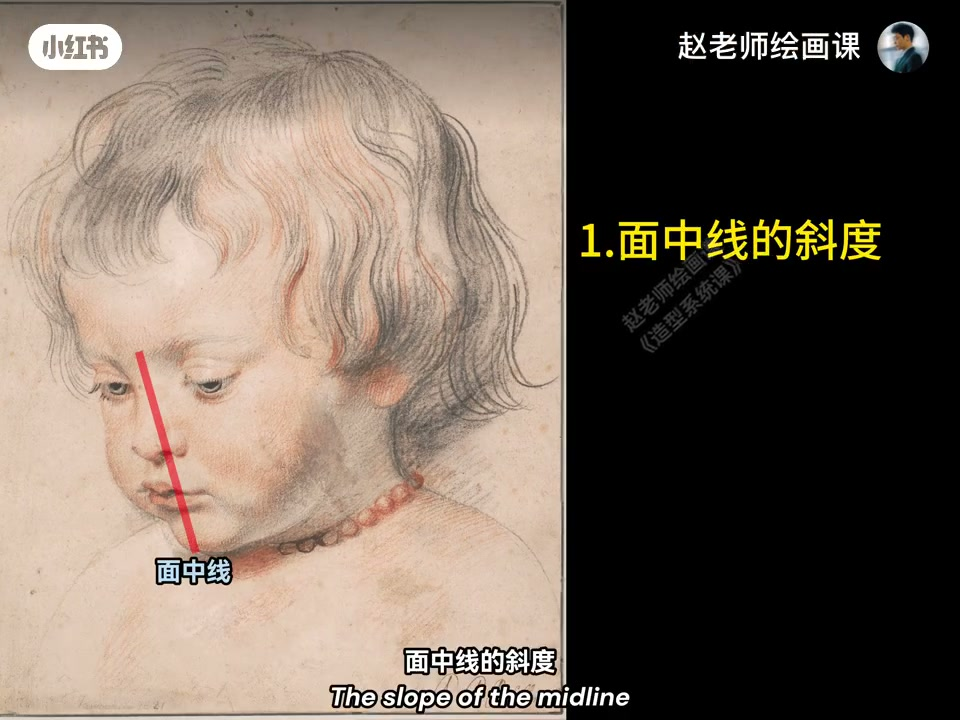
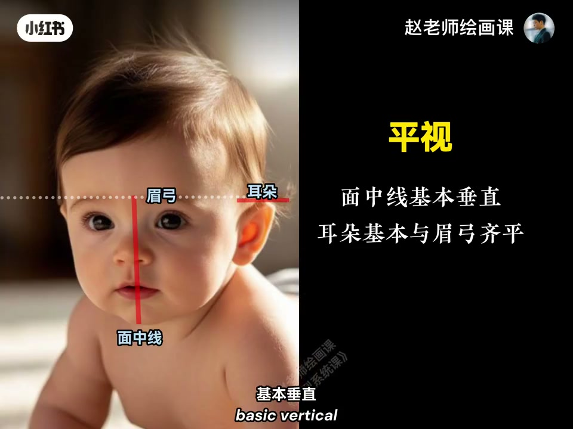
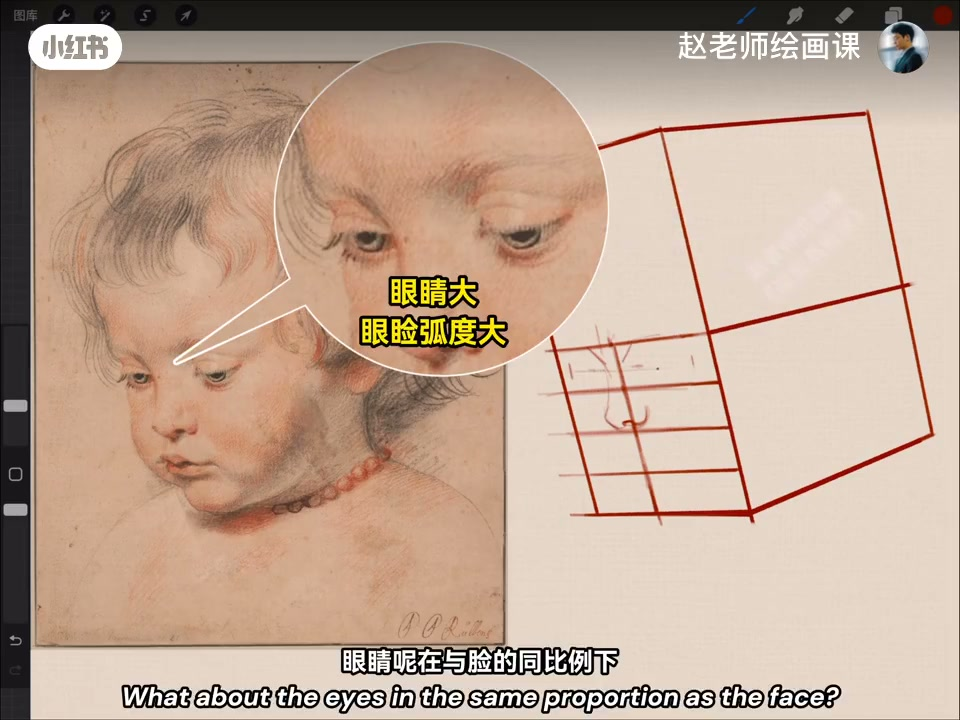
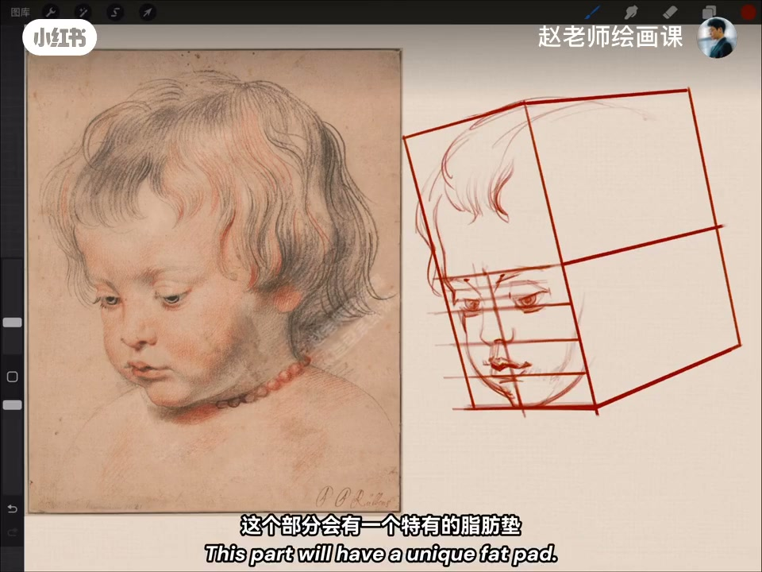

内容要点
第二期读鲁本斯之子肖像：略俯视下温柔溢诸画外。俯视怎么看？面中线斜度，以及耳朵是否高于眉梢；仰视相反，平视面中线近垂直、耳与眉弓齐平。婴儿眉弓约头长一半，俯视中间距递减；鼻梁低缓几乎无额鼻折角，眼相对更宽、睑弧更大，近侧眼角拉长远侧压缩。嘴小巧饱满唇珠可爱，鼻唇外侧距短；无锐下颌角却有脂肪垫，头发软稀卷贴头——深情来自这些造型事实。
知识结构
面中线＋耳相对眉梢判俯／仰／平。
俯视递减；鼻低眼大；近拉长远压缩。
唇珠／短鼻唇距／脂肪垫／软发。
婴儿肖像先判俯视框架与递减比例，再画低鼻梁、大眼睑弧与脂肪垫等年龄特征。
00:00-00:55俯视如何看出来
这恐怕是西方绘画史上最动人的婴儿肖像之一：略俯视下，鲁本斯对儿子的温柔溢诸画外。俯视依据：一面中线斜度，二耳朵是否高于眉梢。演示仰视面中线向后阔、耳低于眉弓；俯视相反；平视面中线基本垂直、耳与眉弓齐平。
再找平行于面中线穿过眉梢的线，标出立方体离我们最近的棱。00:30／00:45 对照卡。


00:55-01:55婴儿比例与五官透视
眉弓约总头长二分之一，往下眼、鼻底、下唇线、下颌均分；因俯视眉弓点下移，间距依次递减。鼻梁低缓与额几乎无转折（成人有明显转角）；鼻翼圆润宽阔，鼻孔小圆微朝上。
同比例下婴儿眼更宽，睑向下弯弧更明显；右眼内眼角与左眼外眼角因更近被拉长，另一侧被压缩——易错。眉毛稀疏柔软附着眉弓。01:35 眼部放大标注。

01:55-03:03嘴、脂肪垫与头发
嘴小巧饱满嘴角上扬；上唇唇峰不如成人明显，凸出的小唇珠特别可爱；鼻头与上唇点最外侧距离较短，不像成人有明显斜度——小嘴嘟嘟原因在此。婴儿无明显下颌角，却有特有脂肪垫，画出来奶香气就出来。
头发柔软稀疏卷曲，贴着圆润头部生长。大师婴儿为何饱含深情？答案就在这些造型选择。02:37 脂肪垫对应口播。

完整转录（101段）
以下文本由 Whisper medium 模型自动转录，可能存在少量识别误差，已尽可能修正。
哈喽大家好
欢迎来到《向大师学造型》第二期
热恐怕是西方绘画史上
最动人的婴儿肖像之一
略微俯视的角度下
卢本斯对儿子的那份温柔与爱怜
仿佛异竹画外
俯视的角度是怎么看出来的
第一
面中线的斜度
第二
耳朵是否高于眉梢
我们来演示一下这个原理
仰视的时候
面中线相脉阔
耳朵呢是低于眉弓的
俯视的时候正好相反
换成平视
面中线基本垂直
耳朵基本与眉弓齐平
好
现在让我们找出
平行于面中线穿过眉梢点的这条线
是立方体
离我们最近的冷
婴儿面部的比例也很有它的规律
比如眉弓是总头长的二分之一
依次往下
眼睛
笔底
下唇线
下颌
都是均分的一个状态
但是由于俯视
眉弓点要下移
原本均等的间距
就开始有了依次递减的状态
有了这个透视的理解
下面的眉笔会变得清晰很多
婴儿的鼻梁很低缓
与额头之间呢
几乎没有转折
成年人则是有明显的转角
鼻翼呢
圆润又宽阔
鼻孔呈小小的圆形
而且微微朝上
眼睛呢
在与脸的同比例下
比成年人的要显得更宽
眼睑向下弯曲的弧度也更明显
右眼的内眼角
和左眼的外眼角
因为距离观看者更近
他们各自啊
都被拉长
而另一侧
则因为距离较远被压缩
这一部分的透视规律啊
很多人尽量画错
眉毛的点位
也可以根据透视来确定好
婴儿的眉毛
稀疏而轴软
然后呢
弯曲的附着在眉弓上
再看嘴巴
小巧而饱满
嘴角上扬
上唇的唇峰
不像成人那么明显
但凸下来的小唇珠
就显得特别的可爱
同时啊
鼻头与上唇点的
最外侧之间的距离
也比较短
不像成年人
有一个明显的斜度
小嘴嘟嘟的缘因啊
就在这儿
婴儿呢
是不会有明显的下颌角的
但是呢
这个部分
会有一个特有的脂肪垫
把它画出来
那种奶香气
一下子就出来了
头发呢
柔软
稀疏
又卷曲
贴着圆润头部来生长
大师笔下的婴儿
为什么如此饱含深情
这就是答案
下期想听哪位大师
作品的造型解读呢
评论区告诉我
拜拜